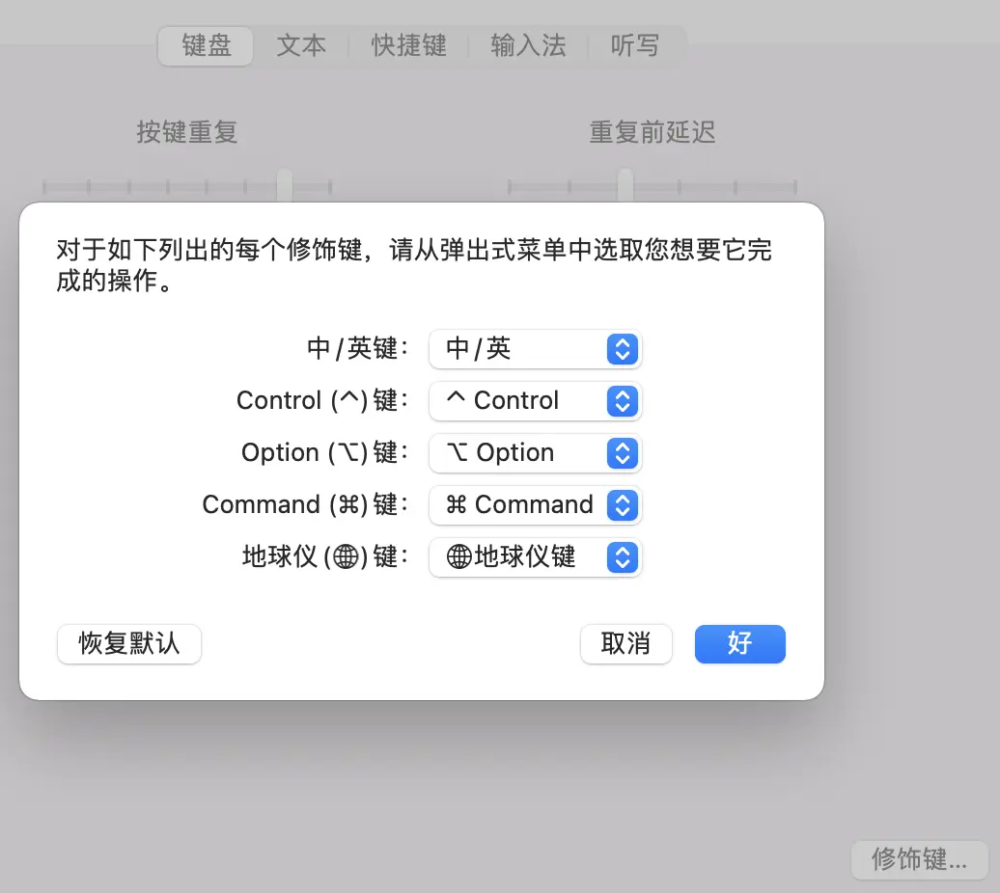

macOS
AI 导读一分钟导读，先掌握全文主干。
核心观点
- macOS 开发环境搭建：Homebrew、终端（iTerm/zsh）、常用开发软件
- 系统优化与日常效率工具配置
- 文末 2024-2026 更新对齐 macOS 新版本变化
关键结论与取舍
- 先用 Homebrew 统一软件安装，环境可复现
- 终端配置（oh-my-zsh 等）一次配好长期受益
码农必备
1. iTerm2
-
配置cmd+u切换窗口透明


-
快速ssh
-
创建一个profile脚本
vim aliyun_iterm2_profile #填写模板内容,替换主机地址和密码,有可能第一次需要手动ssh root@xxxx,添加信任主机 #!/usr/bin/expect -f set user root set host ip set password pwd set timeout -1 spawn ssh $user@$host expect "*password:*" send "$password\r" interact expect eof #增加可执行权限 chmod a+x aliyun_iterm2_profile -
增加profile配置

command要从login shell->command,上图中红色圈圈
上图中红色方框填入第一步profile路径
-
选择执行profile

-
-
替代品warp（GPU 终端，内置 AI 辅助）
- 安装需注册账号，目前采用 GitHub 授权，网络不通可能无法完成整个流程
2. brew

3. oh-my-zsh
-
安装命令
# 如果github访问不了,导致安装不了.则采用国内源安装 # 若 GitHub 无法访问，可配置代理网络，或改用 gitee 上的 oh-my-zsh 镜像（HomebrewCN 是 Homebrew 安装脚本，与 oh-my-zsh 无关） sh -c "$(curl -fsSL https://raw.github.com/ohmyzsh/ohmyzsh/master/tools/install.sh)" -
常用插件
plugins=( git docker extract dnf colored-man-pages command-not-found zsh-syntax-highlighting zsh-autosuggestions ) # 历史记录采用年月日格式 HIST_STAMPS="yyyy-mm-dd" # 在 ~/.zshrc 里设置 ZSH_THEME 为主题名称 ZSH_THEME="robbyrussell" alias cd="z" alias ping="gping" alias ps="procs -tree" alias du="dust" alias df="duf" alias ls="eza -l --header --git" # exa 已停止维护，新一代是 eza alias cat="bat" eval "$(mcfly init zsh)" eval "$(zoxide init zsh)"- zsh-syntax-highlighting
- zsh-autosuggestions
- extract 所有类型的文件解压一个命令x全搞定，再也不需要去记tar后面到底是哪几个参数了。
- command-not-found 当你输入一条不存在的命令时，会自动查询这条命令可以如何获得
- zoxide代替cd,可能不用启动z
- 提供一个 z 命令，在常用目录之间跳转。类似 autojump，但是不需要额外安装软件。
- gping图形化显示ping结果
- colored-man-pages 给你带颜色的 man 命令
- docker 自带插件，可以实现docker命令补全和自动提示。
- difft 自带语法比较，可以替代diff
# Set git configuration for the current repository. git config diff.external difft # Set git configuration for all repositories git config --global diff.external difft- 官方还提供了大量插件，大部分是针对某些功能的命令补全，如golang, python, pip, ruby, vagrant等。
# 显示最近 10 条历史命令 # history [start] [end]，正数从头数，负数从尾数 history -E -10 history -E -10- 禁止自动更新
打开ohmyzsh(zsh) 的配置文件: ~/.zshrc 找到DISABLE_AUTO_UPDATE一行，将行首的注释'#'去掉，则可禁用ohmyzsh 自动检查更新。
4. vscode
Visual Studio Code 有庞大的扩展市场，但安装某个扩展之前，最好先确认该功能是否已被内置。随着每月更新不断把新能力收编为原生支持，越来越多的扩展变得不再必要：在扩展面板搜索 @builtin 可查看内置项，并禁用你不需要的。
-
优秀插件
-
tabnine 有免费的 AI 助手编码补全，值得一试
-
CodeGeeX（智谱出品）另一个 AI 自动生成代码插件
-
shellman、shellcheck、shell-format（Alt+Shift+F）、Code Runner
-
NGINX Configuration Language Support
-
Go for Visual Studio Code 支持一键生成单元测试
-
Python
-
MongoDB for VS Code
-
Redis For VS Code
-
MySQL
-
vscode-drawio 直接在vscode中画图
-
docker
-
toml
-
yaml
-
vscode-pdf
-
Markdown PDF
-
Markdown Preview Mermaid Support
-
vscode-proto3 在.vscode里面的settings.json设置protoc及相关路径
-
JumpProtobuf 在.proto文件跳转f12键
-
Git History
-
GitLens — Git supercharged
-
indent-rainbow
-
vscode-icons用icon标识不同文件
-
Better Comments用不同色彩展示注释
-
Error Lens加强错误显示
-
Project Dashboard把经常使用project固定到仪盘表中
-
CodeSnap 是一个代码截图插件，只需选中项目中相应的代码段，即可快速创建代码的截图。
-
tabnine-AI写代码帮助https://www.tabnine.com/
-
Copilot-AI写代码帮助https://github.com/features/copilot/,tabnine类似
-
Output Colorizer *.log文件彩色输出
-
vscode-database-client 高级使用需要收费 https://github.com/cweijan/vscode-database-client
-
swagger preview-可以设置端口，直接测试接口
-
Hex Editor 以16进制格式查看文件
-
Rainbow CSV
-
Rainbow Brackets
-
Excel Viewer
-
Prettify JSON
-
Path Autocomplete
-
SQL Formatter
-
Regex Previewer
-
Code Spelling checker
-
English word hint
-
vscode-fileheader 插入文件头注释，并且自动更新时间及作者
-
-
自带markdown preview功能，cmd+shift+v
-
tab/shift+tab整体正/反缩进，cmd+click跳进，ctrl+-跳回
-
已知bug
-
vscode打开目录层次不对,应该直接打开工程目录，不能打开父目录，否则报下面错误
could not import github.com/gomodule/redigo/redis (cannot find package "github.com/gomodule/redigo/redis" in any of /usr/local/go/src/github.com/gomodule/redigo/redis (from $GOROOT) /Users/.../gopath/src/github.com/gomodule/redigo/redis (from $GOPATH)) -
自动保存可能会自动插入空格,在生成代码文件，需要注意，可能造成bug.
-
-
修改go test timeout超时
- 点击左下角齿轮->设置 打开用户设置
- 在搜索栏中输入 go test timeout
- 可以找到 go.testTimeout为30s
-
工作空间 workspace多个目录一起打开，组合
-
命令行直接调用
- 命令面板(shift+cmd+p)
- 输入shell command
- 选择Install ‘code’ command in PATH
- 命令行输入code .
-
代码片断
- 打开vscode,file–>preference(首选项)—>user snippets(用户代码片断),输入python回车，添加如下代码：
"Print with space lines": { "prefix": "ppp", "body": [ "print('\\n'*2, $1)" ], "description": "Print with space lines" }

然后在编写python程序 时候，连续按ppp就可以快捷输出打印变量。
5. fig 大幅度提高效率

# 下载安装保存位置
~/.local/bin- 需要填写邮箱用来同步设置，否则没有效果
6. webp converter 批量转换 webp 格式，App Store 免费

7. Atomgithub开源免费文本编辑器，已死掉了


- 优秀插件
- simplified-chinese-menu
- go-plus
- markdown-writer
- platformio-ide-terminal
- file-icons
- regex-railroad-diagram
8. sublimetext,闭源可免费使用文本编辑器

-
安装打开终端插件 terminus
-
cmd+shift+p 然后输入 install package 输入 terminus
-
配置key
{ "keys": ["ctrl+`"], "command": "toggle_terminus_panel", }, { "keys": ["ctrl+shift+`"], "command": "terminus_open", "args": { "cwd": "${file_path:${folder}}" } },
-
-
安装语法高亮nginx配置文件插件 sublime-nginx/Nginx Log Highlighter
- cmd+shift+p 然后输入 install package 输入 nginx
-
安装shell脚本语法高亮插件 Pretty Shell
- cmd+shift+p 然后输入 install package 输入 Pretty Shell
-
安装 Markdown 插件：Markdown Editing
- cmd+shift+p 输入 install package，再输入 Markdown Editing
-
Rainbow CSV
-
Rainbow Brackets
-
Git
-
AutoFileName
-
Pretty JSON
-
Pretty Protocol buf
-
Protocol Syntax Highlighting
-
FileIcons
-
SQL Formatter
-
GitSyntaxes
-
advanced CSV
-
JsFormat
-
HTMLBeautify
-
docker file lint/ docker high light
-
主题及color主题是两种，可以分开选择
9. ungoogled-chromium：无 Google 全家桶的 Chrome
brew install --cask eloston-chromium利用蓝牙传输文件
-
在"系统偏好设置"->“蓝牙”开启功能
-
等待发现蓝牙设备，连接设备，在设备上同意配对
-
mac向设备传输文件使用“蓝牙文件交换”(位于“应用程序”文件夹的“实用工具”文件夹中)
-
设备向mac传输文件，则mac设置蓝牙共享，“系统偏好设置”->“共享”
-
蓝牙传输超慢，建议采用局域网sftp,mac自带sftp服务
无法验证开发者

解决办法：在Finder中找到应用程序，并找到该程序，右键->打开

开机启动
-
Login Items
- 在~/Library/Preferences/com.apple.loginitems.plist
- 在系统偏好设置的“用户与群组”下面进行设置，可以删除、添加、开启和关闭；
-
Launchd Daemon,launchd来负责启动
- ~/Library/LaunchAgents
- /Library/LaunchAgents
- /System/Library/LaunchAgents
- ~/Library/LaunchDaemons
- /Library/LaunchDaemons
- /System/Library/LaunchDaemons
-
StartupItems
- /System/Library/StartupItems
- /Library/StartupItems
技巧
- 在命令行打开访达当前目录
open 特定目录
open .- 截屏 shift+cmd+5 非常好用，谁用谁知道
- 朗读-读出所选内容（option+esc），若没效果可能是系统声音选择不对；本机反应较慢，要等几秒才开始读。

- mac 字体路径：/System/Library/Fonts、/Library/Fonts；ttf（TrueType）是 Apple 与 Microsoft 联合推出的字体格式，ttc（TureType Collection）是多个 ttf 的集合文件（参考）
- Intel 机型自 macOS 27 起出新出局；Apple Silicon（M1–M4）下载软件时注意选 arm64/aarch64（Apple Silicon）版本，避免误装 Intel 版
- xcode默认只有英文界面，不支持中文界面
- iphone采用数据线连上mac,在新版的mac上没有iTunes,在访达偏好设置中有一个显示ios设备选项，否则无法显示出来!
- AppleID网络iCloud同步，前面打勾就会自动上传或下载同步iCloud空间中，
- iCloud云盘是iCloud空间一个目录，本地也有一个对应目录
- 照片也是iCloud空间一个目录，本地也有一个对应目录
- 其他华为，小米帐号iCloud空间都是类似的

- 查看端口
lsof -i tcp:8080- 查看本机地址
# mac把Wi-Fi称为en0
ifconfig en0-
修改hosts sudo vim /etc/hosts
-
深色模式，保护眼睛


-
删除Microsoft Auto Update,烦人的更新提示
cd /Library/Application Support/Microsoft/MAU2.0 sudo rm -rf Microsoft\ AutoUpdate.app -
树状显示目录tree
brew install tree tree -
十六进制显示文件
# xxd系统自带,-l只显示开头40字节 xxd -l 40 filename -
访达/系统按键
名称 作用 回车键 重命名文件夹或文件 command + o 打开文件 command + ↓ 打开文件 command + ↑ 进入当前目录的上一级目录 空格键 预览 -
imagemagick 图像处理神器
brew install imagemagick
# 注意参数位置density是修饰pdf,否则会采用默认72dpi
magick enroll-sch.pdf -density 300 -resize 1330x1900 -quality 100 ./photo/enroll-sch.jpg- ssh免密登录远程
# 输入密码就能实现远程免密登陆，本质上pub文件内容加到远程机器~/.ssh/authorized_keys文件中
ssh-copy-id -i /root/.ssh/id_rsa.pub root@192.168.0.104-
鼠标按windows滚动
- 打开Mac系统偏好设置
- 在系统偏好设置界面，点击"鼠标"
- 进入鼠标的设置窗口，单击“光标与点按"标签
- 在光标与点按设置面板，将"滚动方向：自然"的勾选去掉即可
- 然后在滑动鼠标，即和windows的滚轮一样了
-
替换按键ctrl+alt

-
mac电脑的默认字体-苹方字体，中文就是-苹方-简，有专门的"字体册"app管理
-
编程推荐字体：Menlo、Monaco、Courier New、monospace，12 号
macOS 26-27 收官与 Apple Silicon 时代（2024-2026 更新）
macOS 26 Tahoe（2025-09-16 正式版）
macOS Tahoe 于 2025-06-10 的 WWDC25 上发布、2025-09-16 推送正式版，是兼容 Intel Mac 的最后一个大版本，也是 Liquid Glass 设计语言的首个 macOS 版本。
- Liquid Glass 视觉：菜单栏、Dock、控制中心与桌面小组件全面半透明化，窗口与工具栏「玻璃化」，可自定义图标色调。
- Spotlight 重做：新增剪贴板历史（保存多条复制内容）、Quick Keys 快捷短语、应用/文件/动作四标签页。
- 原生新应用：Phone（Mac 上接打电话）、Journal（手记首次上 Mac）、Apple Games（云存档与游戏资讯）。
- 自动化正式化：快捷指令可按时间或事件自动触发；新增「Use Model」动作调用 Apple Intelligence 或第三方模型执行任务。
- 实时翻译：依托 Apple Intelligence 在信息、FaceTime、电话中做本地化跨语言翻译。
- 26.1（2025-11-03）：开发者关注点——整合 Anthropic MCP 协议，并新增 sudo 权限安全验证（/etc/sudoers 属主校验）。
- 后续线：26.2（2025-12，视频通话边缘光）、26.4（2026-03）、26.6.2（2026-08-18，安全修复）。
macOS 27 Golden Gate（2026-09 正式版）与 Apple Silicon 收官
2026-06-09 的 WWDC26（库克主持的最后一场 WWDC）发布 macOS 27，2026-07-14 推出公开测试版，正式版预计 2026 年秋季推送。仅支持 Apple Silicon 机型，Intel Mac 全部出局（官方承诺此类设备未来三年仍有安全更新）。
- Siri AI 深度集成：独立 Siri 应用（历史对话同步）、Spotlight 内嵌智能问答、邮件「Write with Siri」智能撰写、Visual Intelligence 可对屏幕内容提问与操作。
- Apple Intelligence 下沉：照片空间重构/扩展/增强清理、Safari 智能标签分组与页面监控、密码自动修复。
- Liquid Glass 精调：窗口「红绿灯」按钮、菜单栏图标、Uniform Toolbar 全面玻璃化，新增通透度滑块。
- 底层优化：AirDrop、网络文件浏览与 Safari 启动加载提速，强化超宽屏支持。
- Rosetta 2 倒计时：macOS 27 是最后一个完整支持 Rosetta 2 的版本；macOS 28 起仅保留精简子集（面向存量老游戏），依赖 Intel 转译的软件须尽快迁移原生版本。
开发者生态 2025-2026
- Xcode 26 / Swift 6.x：随 macOS 26.1 配套的 Xcode 26.1 SDK 发布，Swift 6 并发模型全面落地（严格并发检查默认开启）。
- Homebrew on ARM 成为默认：
/opt/homebrew成为新装机唯一前缀，Intel 前缀进入维护模式。 - AI 代理成为新常态：Claude Code 等编码代理在 macOS 本地运行，直接消费终端工具链（rg/fd/gh）与 Raycast/Zed 的 AI 能力。
- 虚拟化：UTM 与 OrbStack 持续更新，Apple Silicon 上跑 Linux/Windows ARM 虚拟机更顺滑。
macOS 14-15 回顾
- Apple Silicon（M3/M4）：性能大幅提升，Go/Rust/Python 原生 ARM64 支持。
- Homebrew on ARM：
/opt/homebrew（ARM）与/usr/local（Intel）分离。 - Shortcuts 自动化：替代 Automator，支持命令行调用。
推荐开发工具
| 工具 | 用途 | 安装 |
|---|---|---|
homebrew | 包管理 | brew.sh |
orbstack | Docker/Linux 替代 | 比 Docker Desktop 轻量 |
raycast | 启动器 | 替代 Spotlight |
ghostty | 终端 | GPU 加速，AI 代理场景流行 |
iterm2 / warp | 终端 | Warp 有 AI 辅助 |
zed | 编辑器 | Rust 编写，极速 |
utm | 虚拟机 | 支持 ARM/Linux/Windows |